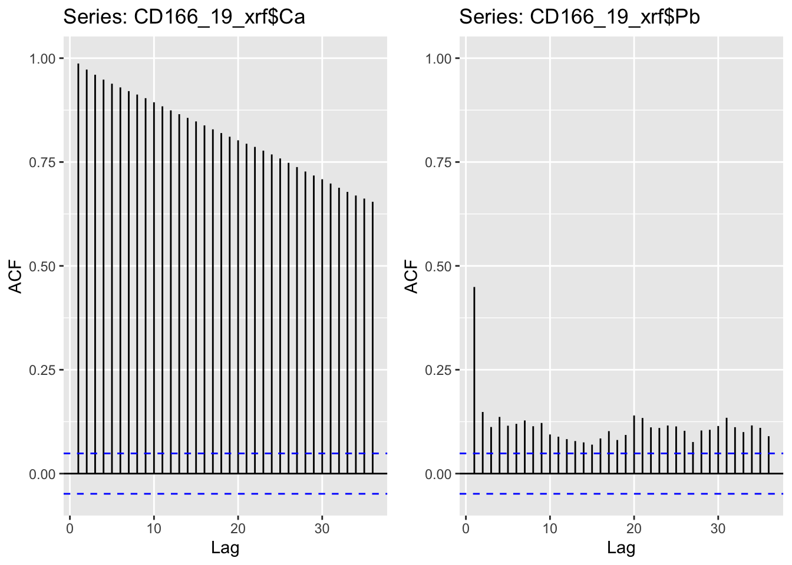
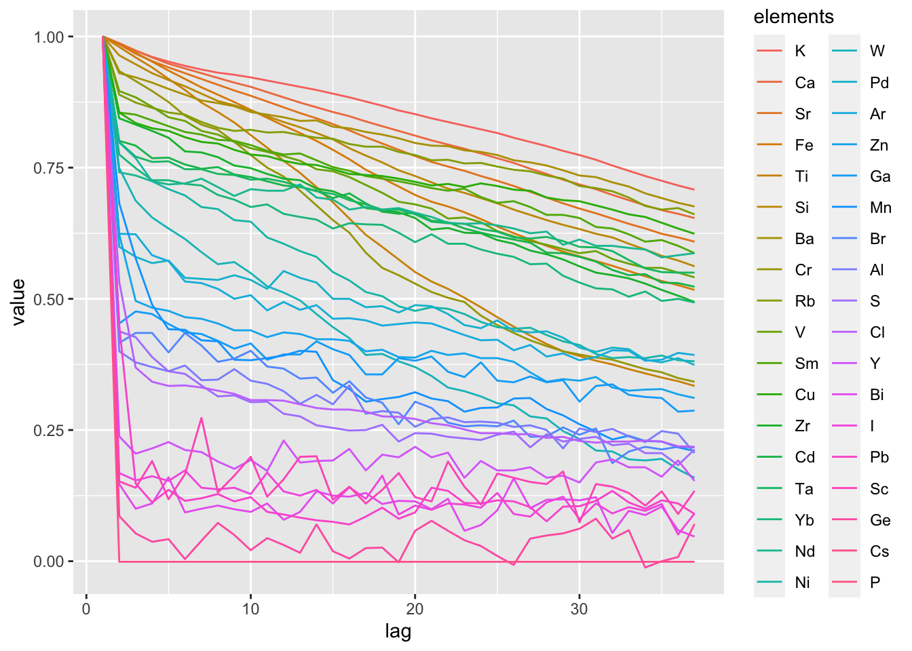
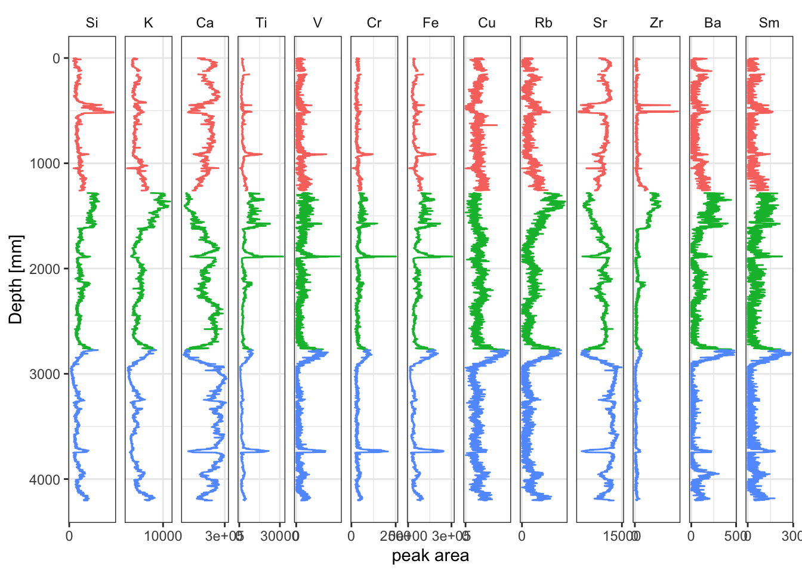

3.10 Noisy Data
It is not always possible to do repeat scans for entire scanning projects, and as such it may be necessary to look at others ways of identifying problematic noisy data. Much of this can be done by good judgement on the part of the analyst, and will depend on the requirements of the projects. However, there are some analytical tools that can help. One method is to look at the autocorrelation of a time-series. We can use the auto-correlation factor (ACF) to explore this for our data.
We might begin with examples for just two elements, Ca and Pb. It is clear from these plots that whereas Ca has the expected pattern of autocorrelation, Pb has generally much lower and a more disordered pattern of autocorrelation.
library(forecast)
egg::ggarrange(
ggAcf(CD166_19_xrf$Ca) +
ylim(c(NA,1)),
ggAcf(CD166_19_xrf$Pb) +
ylim(c(NA,1)),
nrow = 1)
Now we might move on to making calculations for the entirety of the data. In the example below we apply the Acf() function to each of the elements. We might then explore the data by sorting for an arbitrary lag, or by plotting the results together for inspection. In this case, the elements have been sorted by the autocorrelation value at a lag of 5. Although the visualisation is a bit messy with all the elements plotting over one another, it is clear that some elements exhibit very low autocorrelation (e.g. I, Pb, Sc, Ge, Cs, P) and could be possible candidates for exclusion.
apply(CD166_19_xrf %>% select(any_of(elementsList)), 2, FUN = function(x){round(Acf(x, plot = F)$acf, 3)}) %>%
as_tibble(rownames = "lag") %>%
pivot_longer(!c("lag"), names_to = "elements", values_to = "value") %>%
mutate(lag = as.numeric(lag),
elements = factor(elements, levels = filter(., lag == 5) %>% arrange(desc(value)) %>% pull(elements))) %>%
group_by(elements) %>%
ggplot(aes(x = lag, y = value, col = elements)) +
geom_line()
It is worth noting that this analysis has been performed on the entirety of the data, but there is no reason why the data could be problematic for some facies and acceptable for others. It may be necessary to perform some facies analysis and perform these analyses per facies.
Putting all the selection criteria together could look something like the example below.
# identify acceptable variables
apply(CD166_19_xrf %>% select(any_of(elementsList)), 2, FUN = function(x){round(Acf(x, plot = F)$acf, 3)}) %>%
as_tibble(rownames = "lag") %>%
pivot_longer(!c("lag"), names_to = "elements", values_to = "value") %>%
mutate(lag = as.numeric(lag),
elements = factor(elements, levels = filter(., lag == 5) %>% arrange(desc(value)) %>% pull(elements))) %>%
group_by(elements) %>%
filter(lag == 5) %>%
filter(value >= 0.8) %>%
pull(elements) %>%
ordered() -> myElements
# get acceptable observations
CD166_19_xrf %>%
filter(qc == TRUE) %>%
# pivot long
select(any_of(myElements), depth, label) %>%
tidyr::pivot_longer(!c("depth", "label"), names_to = "elements", values_to = "peakarea") %>%
mutate(elements = factor(elements, levels = c(elementsList, "coh/inc"))) %>%
# plot
ggplot(aes(x = peakarea, y = depth)) +
tidypaleo::geom_lineh(aes(color = label)) +
scale_y_reverse() +
scale_x_continuous(n.breaks = 2) +
facet_geochem_gridh(vars(elements)) +
labs(x = "peak area", y = "Depth [mm]") +
tidypaleo::theme_paleo() +
theme(legend.position = "none")